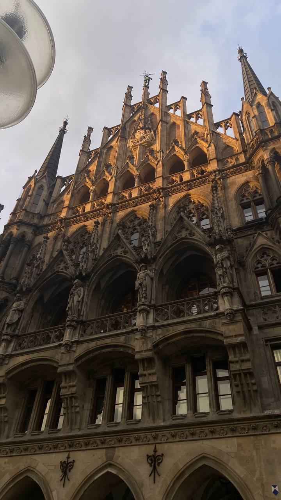
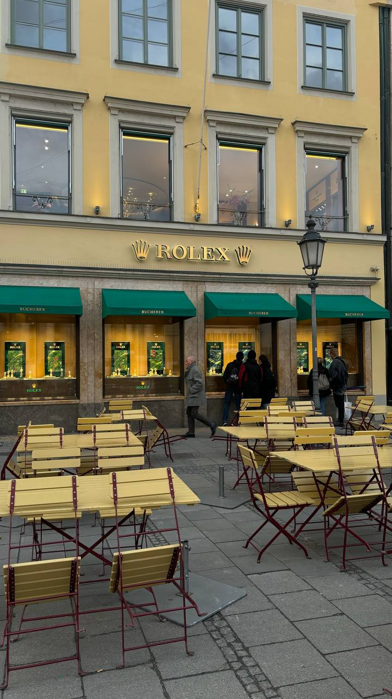
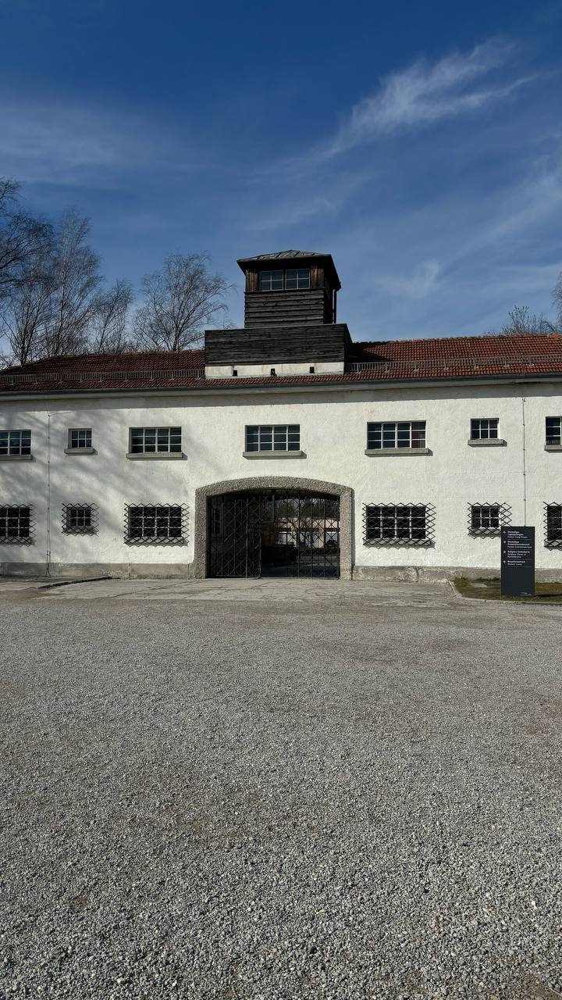
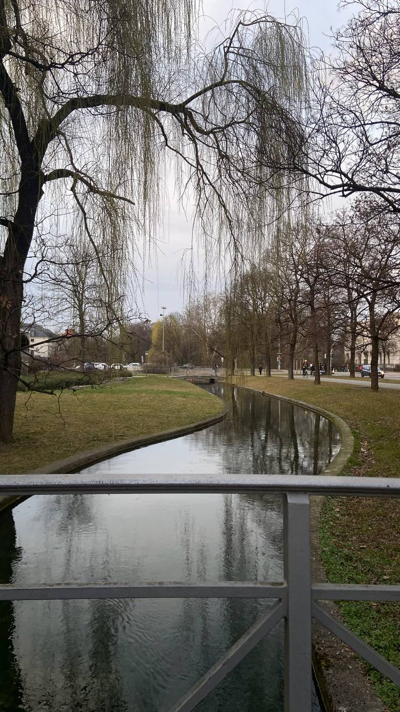
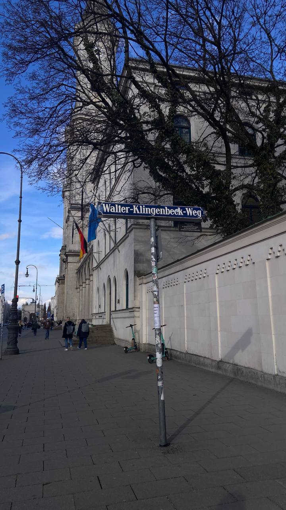

TRIP
- Travel from Torino to Munich by bus (7-8 hours)
- One full day in Dachau





You arrive in Munich by bus.
Dinner at Hofbräuhaus München (traditional Bavarian food)
Visit Residenz München (old royal palace, very beautiful inside)
Walk in Englischer Garten (one of the biggest city parks in Europe). You can:
Have dinner in a beer garden or in a traditional restaurant near the English Garden. Good places are:
VIsit the Dachau Memorial. How to go:
Visit time: about 4-5 hours. It is a serous and emotional place. Take your time.
Return to Munich in afternoon. Quiet evening.
If you choose Neuschwanstein, leave early in the morning.
Walk in the palace gardens. Visit the Carriage Museum and the Amalienburg pavilion. Later, go to the Neuhausen area for a drink or dinner.
After the castle visit, stop in the village of Hohenschwangau for a break. Then return to Munich in the late afternoon. In the evening, have dinner in the city center, near Karlsplatz or Sendlinger Tor.
Shopping in the city center.
After your day in museums and shopping, pick up your bags. Have a quick dinner in the city center (the area near Hauptbahnhof is convenient). Then go to the bus station for your trip back to Turin.



